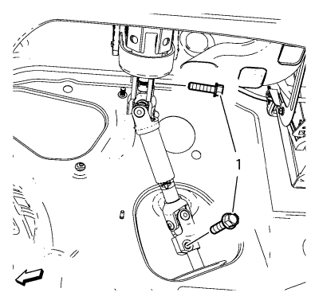
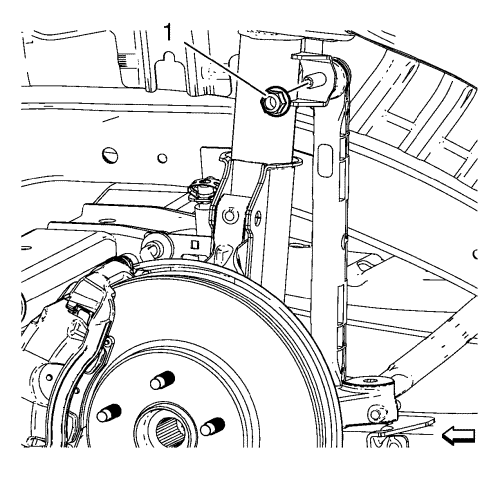
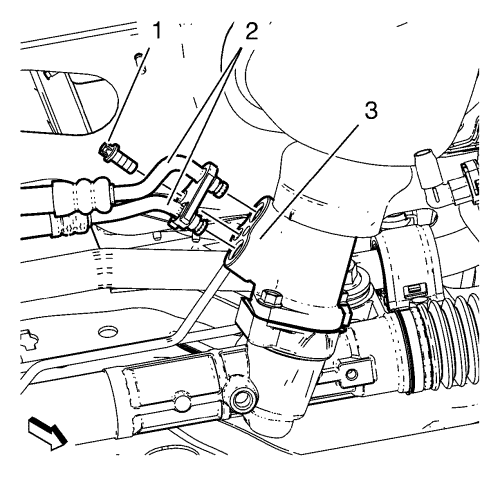
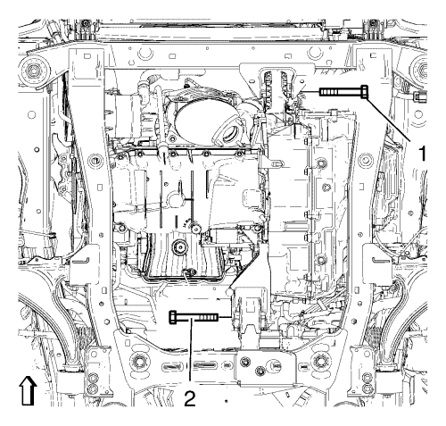
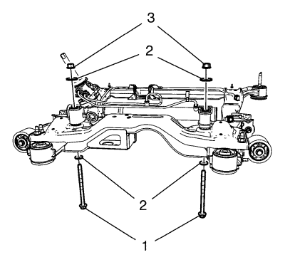
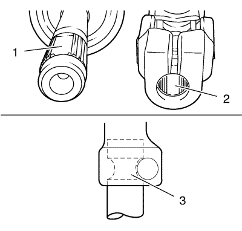

Sustitución del mecanismo de la dirección — Dirección asistida hidráulica
Herramientas especiales
EN 45059 Kit de goniómetro de par de apriete
Si desea informarse sobre herramientas regionales equivalentes, consultar Herramientas especiales .
Procedimiento de desmontaje
- Gire las ruedas delanteras hasta la posición recta y asegúrese de que el volante no se mueve.

- Desmonte el perno inferior del árbol intermedio de la dirección (1).
- Desmonte el eje intermedio de la dirección del mecanismo de la dirección.
- Elevar el vehículo y soportarlo de manera segura. Consultar Elevación y soporte en alto del vehículo .
- Desmonte los conjuntos de neumático y llanta. Consultar Desmontaje y montaje de la rueda y el neumático .
- Desmonte el tubo de escape delantero. Consultar Sustitución del tubo de escape delantero → 2.0 L diesel LNP → LDE,LLU,LXT,LXV,L2W,2H0 .
- Retirar el protector de salpicaduras del habitáculo frontal. Consultar Sustitución del protector de salpicaduras del habitáculo frontal .
- Desmonte el aislamiento del compartimento delantero, si el vehículo lo posee. Consultar Sustitución del aislamiento del compartimento delantero .
- Desmonte la barra de acoplamiento interior del varillaje de la dirección. Consultar Sustitución de la barra de acoplamiento interior del varillaje de la dirección → Dirección asistida electrónica → Dirección asistida hidráulica .

- Desmonte y deseche la tuerca del árbol de fijación de la barra estabilizadora (1) del refuerzo.
- Desmonte el eje de la barra estabilizadora del refuerzo.
- Coloque un contenedor grande bajo el vehículo para recoger el líquido de vaciado.

- Desmonte el perno de los tubos flexibles de entrada y salida del mecanismo de la dirección (1), desmonte el tubo flexible de entrada y salida (2) del mecanismo de la dirección (3).

- Desmonte los pernos delantero (1) y trasero (2) del soporte del alojamiento del cambio.
- Extraiga los pernos del bastidor trasero a la carrocería. Consulte la sustitución del bastidor de la suspensión del tren anterior y el tren motriz Sustitución del bastidor de la suspensión del tren anterior y del tren motriz .
- Baje la parte trasera del bastidor, máx. 50 mm (1,968 pulgadas) para lograr tolerancia para el mecanismo de la dirección.

- Desmonte y deseche los tornillos del mecanismo de la dirección (1), las tuercas (3) y arandelas (2) del mecanismo de la dirección.
- Desmonte el mecanismo de la dirección.
Procedimiento de montaje
Atención: Compruebe que la junta del tablero de mando de la dirección asistida esté bien montado sobre la carcasa del mecanismo de dirección de cremallera y piñón. El labio de sellado DEBE reposar uniformemente sobre la superficie de la cubierta inferior de la columna de dirección. Para facilitar la colocación de la junta. aplique jabón líquido al labio de sellado. Una vez instalado, compruebe que el labio de sellado no sobresalga de la zona interior del vehículo. Si la instalación no es correcta, el sellado puede no ser adecuado y no impedir la entrada de agua en el vehículo.
- Monte el mecanismo de la dirección.
- Monte los pernos del mecanismo de la dirección (1), arandelas (2) y tuercas (3) al mecanismo de la dirección.
Precaución:Consulte Precaución con las fijaciones en la sección Prólogo.
- Apriete los NUEVOS pernos del mecanismo de la dirección a 110 N·m (81 lb ft) + 150 a 160°, utilizando el kit EN 45059.
- Levante el bastidor con el gato hidráulico.
- Monte los pernos del bastidor trasero a la carrocería. Consulte la sustitución del bastidor de la suspensión del tren anterior y el tren motriz Sustitución del bastidor de la suspensión del tren anterior y del tren motriz .
- Monte el perno (1) del alojamiento delantero del cambio y apriételo a 58 N·m (43 lib. pie).
- Monte el perno (2) del soporte del alojamiento trasero del cambio y apriételo a 100 N·m (74 lib. pie).
- Sustituya las juntas tóricas de los tubos flexibles de entrada y salida. Lubrique las juntas tóricas con una pequeña cantidad de aceite hidráulico.
- Monte el tubo flexible de entrada y salida (2) en el mecanismo de la dirección (3) e instale el tornillo del tubo flexible de entrada y salida de la dirección asistida (1). Apriete el tornillo del tubo flexible de entrada y salida de la dirección asistida a 11 N·m (98 lb pulg.).
- Monte la fijación de la barra estabilizadora en el refuerzo.
- Monte la NUEVA tuerca de la fijación de la barra estabilizadora (1) y apriétela a 65 N·m (48 lib. pie).
- Monte la barra de acoplamiento interior del varillaje de la dirección. Consultar Sustitución de la barra de acoplamiento interior del varillaje de la dirección → Dirección asistida electrónica → Dirección asistida hidráulica .
- Monte el aislamiento del compartimento delantero, si el vehículo lo posee. Consultar Sustitución del aislamiento del compartimento delantero .
- Monte el protector contra salpicaduras del compartimento delantero. Consultar Sustitución del protector de salpicaduras del habitáculo frontal .
- Monte el tubo de escape delantero. Consultar Sustitución del tubo de escape delantero → 2.0 L diesel LNP → LDE,LLU,LXT,LXV,L2W,2H0 .
- Monte los conjuntos de neumático y llanta delanteros. Consultar Desmontaje y montaje de la rueda y el neumático .
- Bajar el vehículo.

Nota: El rebaje (2) del dentado fino de la cruceta tiene que estar alineado con precisión con el rebaje (1) del dentado fino del piñón de dirección. El orificio de la cruceta tiene que estar alineado con la ranura del piñón de dirección (3).
- Compruebe la alineación del dentado fino de la cruceta y del piñón de dirección.
- Monte los pernos del árbol de dirección intermedios inferiores (1) y apriételos hasta 34 N·m (26 lib. pies).
- Ajustar la alineación de las ruedas delanteras. Consultar Alineación de las ruedas - Ángulo del volante de dirección y/o ajuste de la puntera frontal .
- Purgue el sistema de sistema de dirección hidráulica. Consultar Purga de aire del sistema de dirección asistida .
| © Copyright Chevrolet. Reservados todos los derechos |